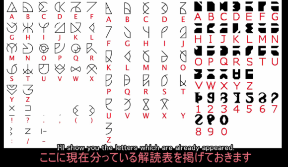

輸出結果
儲存圖片
如果圖片無法順利儲存，請自行右鍵存圖（手機長按圖片存圖）
異世界文字編輯器
|
ONAMAE |
|
________________________________ |
|
SEIBETSU NENREI |
|
_____________ / /________________ |
說明：
這裡輸入的英文與數字會轉換成對應的異世界文字
電腦版點擊編輯區後就會出現進階編輯選項
字型【Konosuba】
a~z:
abcdefgh
ijklmnop
qrstuvwx
yz
A~Z:
ABCDEFGH
IJKLMNOP
QRSTUVWX
YZ
0~9
0123456789
字型【KonosubaCube
】
a~z:
abcdefgh
ijklmnop
qrstuvwx
yz
0~9
0123456789
| 說明 |
可以簡單快速的將【
為美好的世界獻上祝福！(この素晴らしい世界に祝福を!)
】中出現的異世界文字輸出成圖片。
|
| 版本 | 1.1.6 |
| 討論區 | 討論區 |
| 字體作者 | mdma98765432（里繆艾萊．赫．瓦萊） |
| 素材作者 | Yirgacrow (Yirgacrow) |
| 網站作者 | hbl917070（深海異音） |
| 對照表 |  |